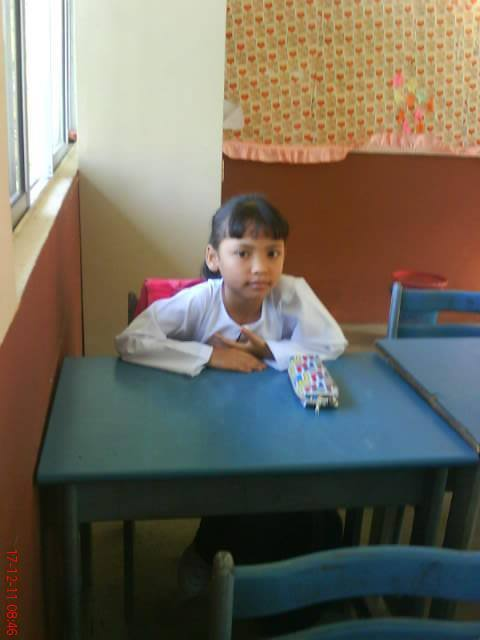

Primary School
SK Seksyen 7 Bandar Baru Bangi | 2012 – 2017

Building strong basics, learning responsibility, teamwork, and developing early confidence.
UPSR: 5A 1B
Every phase shaped who I am today
My early foundation where curiosity began, learning discipline, friendships, and discovering the joy of knowledge.
Building strong basics, learning responsibility, teamwork, and developing early confidence.
UPSR: 5A 1B
A phase of growth, self-discovery, challenges, and unforgettable memories that shaped my resilience.
SPM: 6A 2B

Main areas I have explored:

Key learning phases:
I believe education isn’t just about grades, but about growth, healing, and finding meaning in every lesson learned.